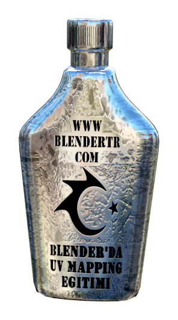
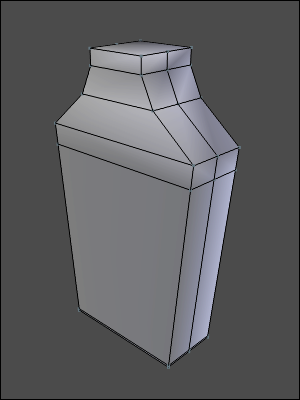
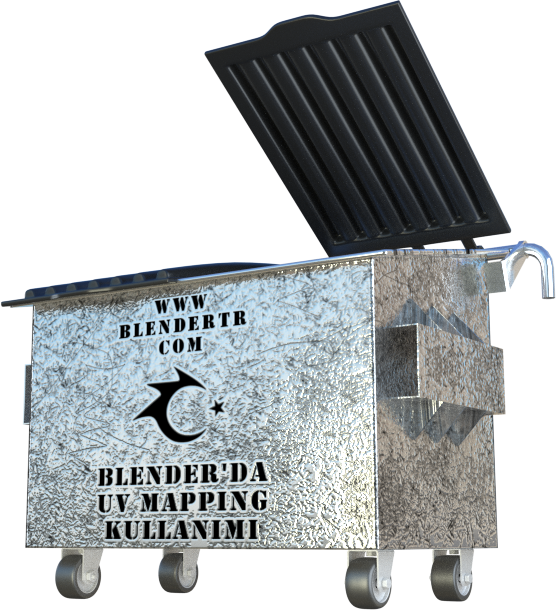
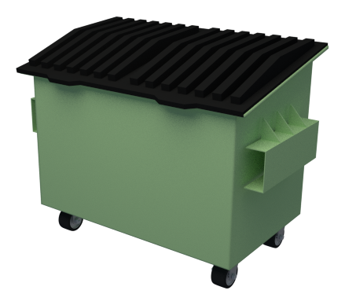

Cts 09 Temmuz 2022
Tags:
read_clipboard() Fonksiyonu Nedir? Nasıl Kullanılır?
read_clipboard() fonksiyonu ile panoya kopyaladığımız veriyi (örneğin bir Excel tablosu ya da websitesindeki tabloyu) Veri Çerçevesine dönüştürebiliriz.
pano = pd.read_clipboard()
print(pano)
|
İlçe |
2020 |
2021 |
Fark |
Nüfus art. % |
Mah. say. |
Alanı km2 |
Yoğunluk |
| 0 |
Adalar |
16.033 |
16.372 |
339.000 |
2.11 |
5 |
11 … |
Continue reading »
Cts 09 Temmuz 2022
Tags:
read_csv() Fonksiyonu
read_csv fonksiyonu, Pandas kütüphanesinin en önemli araçlarından biridir ve temel olarak virgülle ayrılmış değerler (CSV) formatındaki dosyaları okuyarak bunları Veri Çerçevesi (DataFrame) adı verilen, satır ve sütunlardan oluşan tablo yapısına dönüştürmek için kullanılır.
Basitçe söylemek gerekirse, bu fonksiyon, bilgisayarınızdaki bir veri dosyasını (örneğin, bir Excel dosyasının dışa aktarılan …
Continue reading »
Cts 09 Temmuz 2022
Tags:
read_html() Fonksiyonu Nedir? Nasıl Kullanılır?
read_html() fonksiyonu ile web sitelerinde ya da htm/html uzantılı dosyalardaki tabloları, çalışmalarınıza dahil edebilirsiniz. Öncelikle veri almak istediğimiz sayfanın içerisinde kaç adet tablo olduğunu bulalım.
url_tablo = pd.read_html("https://tr.wikipedia.org/wiki/Van")
print(f"Sayfada bulunan toplam tablo sayısı: {len(url_tablo)}")
Cts 09 Temmuz 2022
Tags:
read_json() Fonksiyonu Nedir? Nasıl Kullanılır?
read_json() fonksiyonu ile json uzantılı dosyaları çalışmalarınıza dahil edebilirsiniz.
veri_json = pd.read_json("Veri_Setleri/json_verisi.json")
print(veri_json)
|
Duration |
Pulse |
Maxpulse |
Calories |
| 0 |
60 |
110 |
130 |
409 |
| 1 |
60 |
117 |
145 |
479 |
| 2 |
60 |
103 |
135 |
340 |
| 3 |
45 |
109 |
175 |
282 |
| 4 |
45 |
117 |
148 … |
Continue reading »
Cts 09 Temmuz 2022
Tags:
read_table() Fonksiyonu Nedir? Nasıl Kullanılır?
Bu bölümde harici kaynaktan bir CSV dosyasından verileri okuyarak veri çerçevesine dönüştürmeyi öğreneceğiz.
read_table() Fonksiyonu
read_table() fonksiyonu ile CSV uzantılı dosyalar içe aktarıldığında, dosyanın her satırı, tablonun bir sütununa yazılır. Yani tabloda 2 sütun oluşturulur, birinci sütunda index bilgisi, ikinci sütunda ise csv dosyasının satırlarındaki …
Continue reading »
Cts 09 Temmuz 2022
Tags:
Pandas Kütüphanesi Notları
Python'a Giriş konusuna ait notları, FreeCAD için Python ile Komut Dosyası Oluşturma (Scripting) Eğitiminde paylaşmıştık. İlave olarak Python'ın en güçlü ve işlevsel kütüphanelerinden biri olan Pandas'a ait notları paylaşmaya devam ediyorum.

PANDAS NEDİR?
Python'a Giriş konusu ile alakalı bilgileri, FreeCAD Eğitim Notları bölümünde 1. Python'a Giriş …
Continue reading »
Cts 18 Haziran 2022
Tags:
Blender UVMaping Eğitimi - 1. Bölüm
UV Map nedir? Ne işe yarar, UV nasıl açılır, UV Map nasıl hazırlanır? konularını anlatmak için hazırlamış olduğum Dokümanın 1. bölümünü istifadenize sunuyorum.

Blender’da UV Mapping Kullanımı isimli anlatımda kullanacağımız Modelimiz, aşağıda gördüğümüz gibi, basit bir Şişe Nesnesidir.

Öncelikle, Model (Nesne) Gövdesinin UV açılımını …
Continue reading »
Cts 18 Haziran 2022
Tags:
Blender UVMaping Eğitimi - 2. Bölüm
UV Map nedir? Ne işe yarar, UV nasıl açılır, UV Map nasıl hazırlanır? konularını anlatmak için hazırlamış olduğum Dokümanın 2. bölümünü istifadenize sunuyorum.

Bu Dersimizde, Modellemiş olduğum Çöp Konteynerini kullanarak UV Mapping konusuna devam edeceğim.

UV açma işlemine başlamadan önce, bildiğiniz gibi, modelimizi seçiyor ve …
Continue reading »
Prş 16 Haziran 2022
Tags:
Blender için Yerli ve Yabancı Kaynaklar
Blender öğrenirken faydalandığım
yerli ve yabancı kaynaklara ait bağlantıları aşağıda bulabilirsiniz.
Umarım sizler için de faydalı olur.
YERLİ KAYNAKLAR
Baran ve Reha YAĞCIOĞLU
Sayın Baran YAĞCIOĞLU ve Reha
YAĞCIOĞLU'nun hazırlamış olduğu Türkçe içerikli video derslerin
istifadenize sunulduğu muhteşem site ve youtube kanalı.
http://www …
Continue reading »
Prş 10 Mart 2022
Tags:
Bölüm 9: Bilinen Hatalar ve Sorunlar
Mantıksal (Boolean: ekleme, çıkarma, kesişim)
işlemleri üçgen ağlarda/kafeslerde/mesh (tam NURBS yüzeyleri yerine)
gerçekleştirildiğinde, elde edilen ağ/kafes (mesh) yapısı kalitesi,
genellikle düşük olacaktır. Eğriler farklı şekilde parçalı-doğrusal
olarak yaklaştırılsaydı, daha az üçgenle eşit derecede iyi bir ağ/kafes
yapısı elde edilebilirdi, veya …
Continue reading »